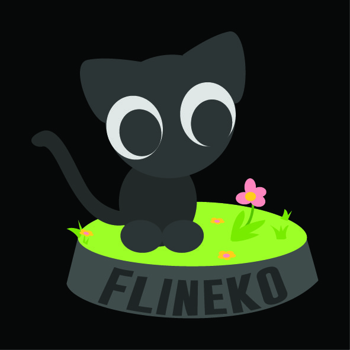
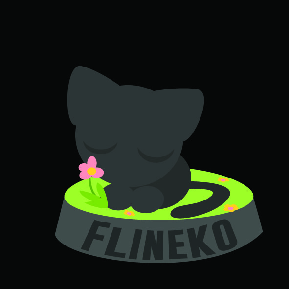
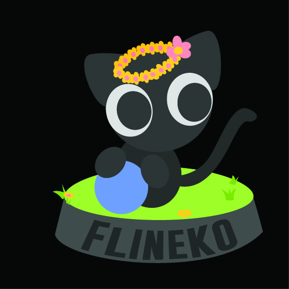
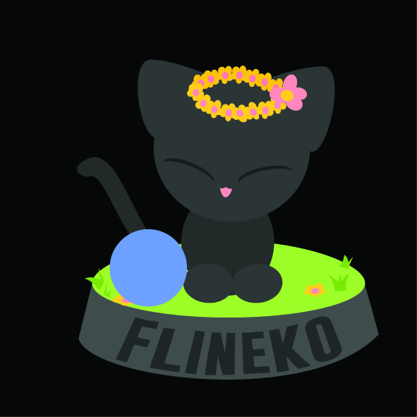

NEKO 1

NEKO 2

NEKO 3

NEKO 4
About
Who am I
Flineko is a small cat with a disability in his hind legs, but he is incredibly strong and optimistic. Although he can't run and jump as freely as other cats, he uses his agile front paws and determined spirit to explore the world around him. Flineko has large, bright eyes full of curiosity and intelligence, and he loves to quietly observe everything happening around him.
His fur is soft and smooth, often gleaming in the sunlight. He particularly enjoys curling up on a cozy blanket, basking in the warmth, or being gently cradled in someone's arms. Flineko has a warm and affectionate personality, and in his own way, he shows that even with physical challenges, life can still be full of love and joy.
He often makes soft meowing sounds to get attention and rubs his head against people to show his gratitude for their care and companionship. Flineko is a brave little cat who, despite the challenges, faces each day with an optimistic heart.
WORK OF FLINEKO
WORK OF FLINEKO
We will be creating a figurine of Flineko, the brave and lovable cat, and 60% of the proceeds from sales will be donated to a stray animal association. This project not only celebrates Flineko’s resilience and spirit but also supports the well-being of other animals in need.
Contact
Say Hello,
Meow! Hi there! I'm Flineko, nice to meet you!" Flineko tilts his head and gives a soft purr, his bright eyes full of curiosity and warmth.
Address
Follow Me
Meow! Follow me to my home!" Flineko softly purrs, his tail flicking with excitement as he leads the way.